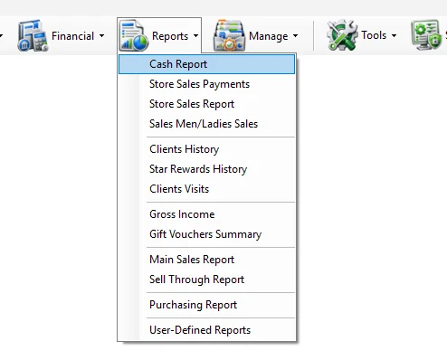

Reports
The Reports menu brings together the operational, sales, customer, profitability, inventory-performance and purchasing reports used across IMS.

Reports menu
| Module | Scope |
|---|---|
| Cash Report | Review POS cash activity and daily cash totals by Store/POS and business date. |
| Store Sales Payments | Analyze Store sales by payment type, transaction type and receipt when required. |
| Store Sales Report | Review Store sales performance, Cash/Credit activity, refunds, traffic and conversion measures. |
| Sales Men/Ladies Sales | Analyze Sales Man/Lady performance, quantities, amounts, invoices, ATV and UPT. |
| Clients History | Review customer purchase history by date, Store, category, client and transaction detail. |
| Star Rewards History | Review Star Rewards customer account, points/wallet information and reward transactions. |
| Clients Visits | Analyze customer visits/new clients, spend and percentage measures by time or Store grouping. |
| Gross Income | Analyze inventory, sales, cost, markup, gross profit and GPM by Supplier or Store. |
| Gift Vouchers Summary | Summarize issued, expired, canceled, net and redeemed gift-voucher amounts. |
| Main Sales Report | Flexible multi-dimensional sales analysis with extensive filters, Group By options, KPIs and traffic/conversion support. |
| Sell Through Report | Analyze received stock, net sales, remaining stock, sell-through, sales mix, ADR and related merchandise KPIs. |
| Purchasing Report | Analyze purchasing quantities, landed/local cost, retail value, expenses, markup and merchandise dimensions. |
| User-Defined Reports | Run reports created through Custom Reports and made available to authorized IMS users. |
Current guide
01
Cash ReportPOS cash and daily cash reporting.
02
Store Sales PaymentsPayment-method totals and optional transaction/receipt detail.
03
Store Sales ReportStore performance, Cash/Credit sales, refunds, traffic and conversion.
04
Sales Men/Ladies SalesSalesperson quantities, amounts and productivity KPIs.
05
Clients HistoryCustomer purchase history and transaction detail.
06
Star Rewards HistoryRewards wallet/account and transaction history.
07
Clients VisitsCustomer visits, new clients and spending analysis.
08
Gross IncomeCost, stock, sales, markup, gross profit and GPM analysis.
09
Gift Vouchers SummaryVoucher issue, expiry, cancellation and redemption summary.
10
Main Sales ReportFlexible multi-dimensional sales and KPI analysis.
11
Sell Through ReportReceived stock, sales, OH quantity and merchandise sell-through KPIs.
12
Purchasing ReportPurchasing, landed cost, expenses, retail and markup analysis.
13
User-Defined ReportsRun authorized reports created through the Custom Reports module.